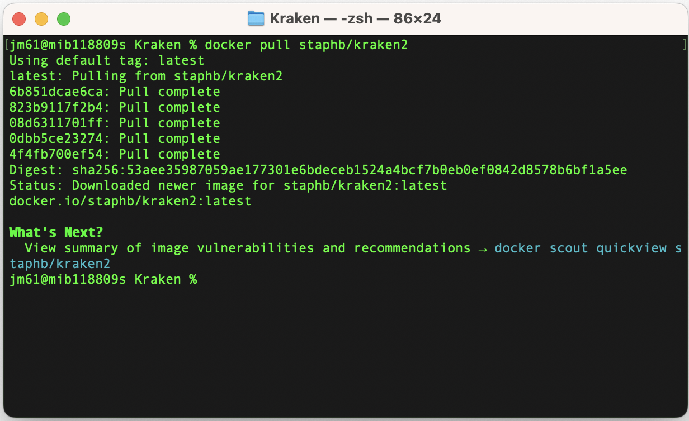
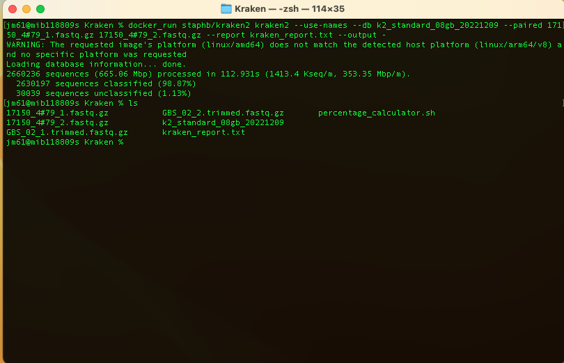
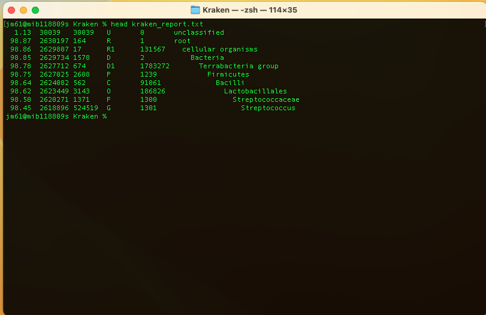
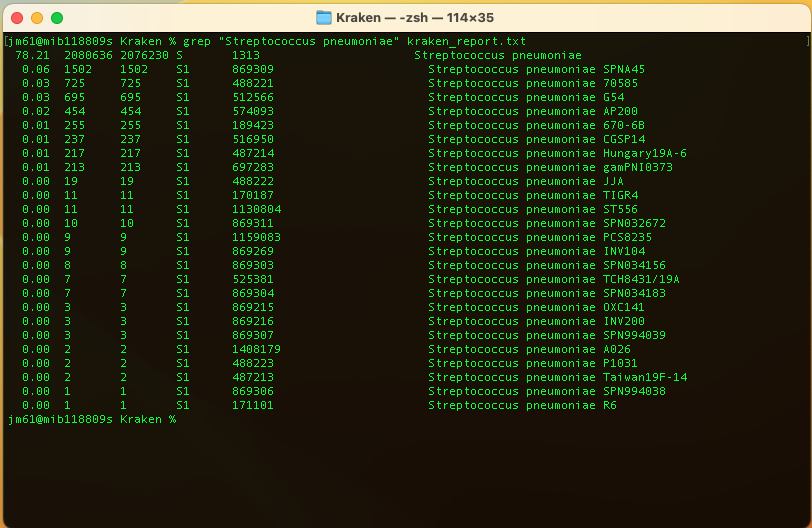
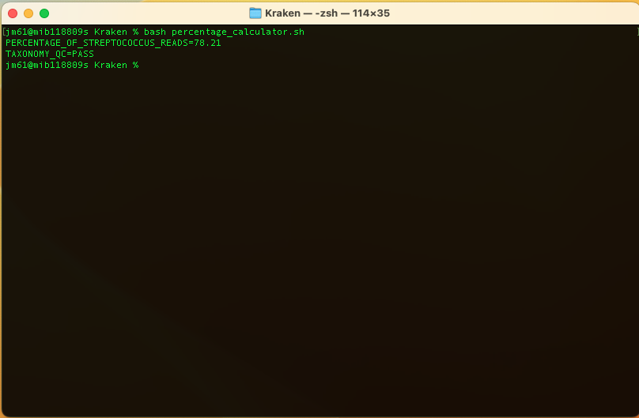

Before you being this section, navigate to the taxonomy_classification folder. You will use this folder and its contents to learn and practice this section.
Overview
Kraken is a taxonomic sequence classifier that assigns taxonomic labels to short DNA reads. It does this by examining the k-mers within a read and querying a database with those k-mers. This database contains a mapping of every k-mer in Kraken's genomic library to the lowest common ancestor (LCA) in a taxonomic tree of all genomes that contain that k-mer. The set of LCA taxa that correspond to the k-mers in a read are then analyzed to create a single taxonomic label for the read; this label can be any of the nodes in the taxonomic tree. Kraken is designed to be rapid, sensitive, and highly precise. Our tests on various real and simulated data have shown Kraken to have sensitivity slightly lower than Megablast with precision being slightly higher. On a set of simulated 100 bp reads, Kraken processed over 1.3 million reads per minute on a single core in normal operation, and over 4.1 million reads per minute in quick operation.
Tool(s)
We will be using Kraken2 in this section. If you do not have these tools in your local machine, you can download them from a docker repository using the commands:
docker pull staphb/kraken2

Classification
To classify a set of sequences (reads), we will use the command:
docker_run staphb/kraken2 kraken2 --use-names --db k2_standard_08gb_20221209
--paired 17150_4#79_1.fastq.gz 17150_4#79_2.fastq.gz --report kraken_report.txt
--output -
An explanation of this command is as follows:
docker_run:is a function to start a container. The function includes the following flags: docker run --rm=True -u $(id -u):$(id -g) -v $(pwd):/data "$@". To understand the docker_run function read the module [Data and Computational Platforms (Docker)]
staphb/kraken2: is the docker image
kraken2: is the tool
--use-names: Print scientific names instead of just taxids
--db k2_standard_08gb_20221209: Name for Kraken 2 database
--paired 17150_4#79_1.fastq.gz 17150_4#79_2.fastq.gz: Provide paired-end reads
--report kraken_report.txt: Generate a report with aggregrate counts/clade to file
--output -: Suppress output for standard output
You will get the output:

You can check the kraken output using the command: head kraken_report.txt

You should get:
- 1st column: Percentage of fragments covered by the clade rooted at this taxon
- 2nd column: Number of fragments covered by the clade rooted at this taxon
- 3rd column: Number of fragments assigned directly to this taxon
- 4th column: A rank code, indicating (U)nclassified, (R)oot, (D)omain, (K)ingdom, (P)hylum, (C)lass, (O)rder, (F)amily, (G)enus, or (S)pecies. Taxa that are not at any of these 10 ranks have a rank code that is formed by using the rank code of the closest ancestor rank with a number indicating the distance from that rank. E.g., "G2" is a rank code indicating a taxon is between genus and species and the grandparent taxon is at the genus rank.
- 5th column: NCBI taxonomic ID number
- 6th column: Indented scientific name
To find the percentage of fragments covered by the Streptoccocus pneumoniae, run:
grep "Streptococcus pneumoniae" kraken_report.txt
You should get:

QC of Taxonomy
Now we will calculate the percentage of Streptococcus pneumoniae reads and based on that we will assess if the sample is Pass or Fail
The cut-off limit for Streptococcus pneumoniae is 60%
≤60% = FAIL
>60% = PASS
The sample should have more than 60% of the reads from Streptococcus pneumoniae.
We will run a custom bash script (bash percentage_calculator.sh) to do the assessment; this script is available in the kraken folder
